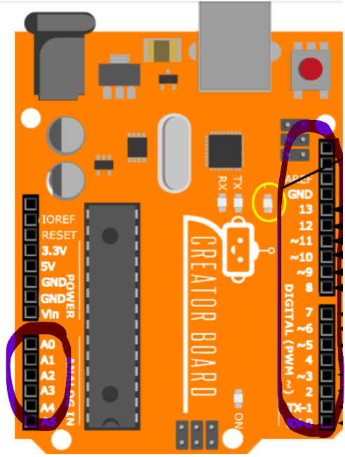
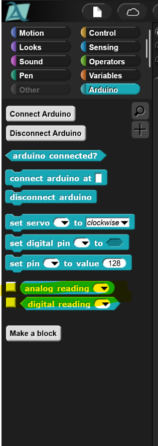
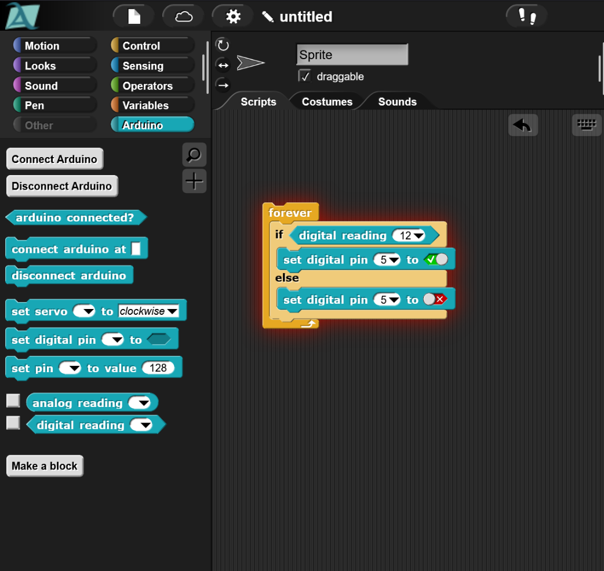

Inputs

We've seen how we can send signals to our Arduino to turn on LEDs, but what if we want to receive signals from our Arduinos? We can do this using the digital and analog pins on the Arduino. The analog pins are the pins circled on the left, the digital pins, as we saw before, are those on the right.
When electricity flows through a circuit into any of the analog or digital pins, we can get a reading and do different things depending on what kind of signal we receive.
Before we go further we should learn about the different kinds of signals. For the process of building our circuits we need to focus on two types of signals. Digital signals are signals that are either on or off. Think of these like a light switch. The light is either on, and we have a signal we can receive, or its off and there is no signal. Analog signals are signals that can be a range of values. For our robots, this is how much electricity we are sending. For a clearer example analog signals are like temperature or a knob on an old radio. These can range from having no signal and being off, to nearly any other number.

The way we can use these pins through code is using the "Analog Reading" and "Digital Reading" blocks of code. Using these we can control things depending on whether there is a signal.

For example, with code like this, we can turn on an LED plugged into digital pin 5, as long as we receive an on signal from digital pin 12. If we use a button and wire it to digital pin 12, we can make it so that our LED only turns on while the button is pressed. We'll see how to do this in class.